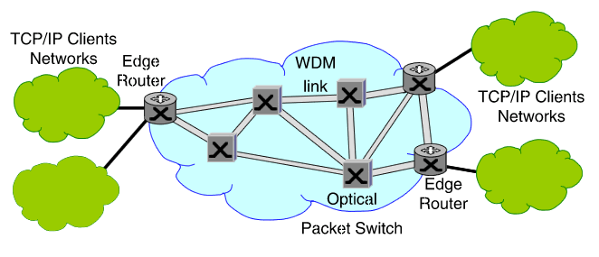

Università degli Studi di Bologna
FACOLTÀ DI INGEGNERIA
Corso di Laurea in Ingegneria delle Telecomunicazioni
Sistemi di Commutazione
Simulazione del Protocollo TCP su Rete Ottica a Pacchetto
Tesi di laurea di:
MATTEO MORTARO
|
Relatore:
Prof.ssa Ing. CARLA RAFFAELLI
Correlatori:
Chiar.mo Prof. Ing. GIORGIO CORAZZA
Dott. Ing. PAOLO ZAFFONI
|
Contesto di rete ottica
- Elevati volumi di traffico
- DWDM (Dense Wavelength Division Multiplexing)
- Rete ottica a pacchetto
Contesto di rete ottica
- Elevati volumi di traffico
- DWDM (Dense Wavelength Division Multiplexing)
- Rete ottica a pacchetto

Il modello SIR
- i Suscettibili (S), ovvero gli individui non infetti ma che possono con trarre l’infezione;
- gli Infetti (I), ovvero gli indidui che hanno contratto l’infezione e che sono in grado di trasmettere la malattia;
- i Rimossi (R), ovvero gli individui che non partecipano al processo
epidemico perché durante il decorso dell’epidemia sono isolati, o hanno
contratto la malattia e sono guariti, oppure morti a causa dell’infezione;